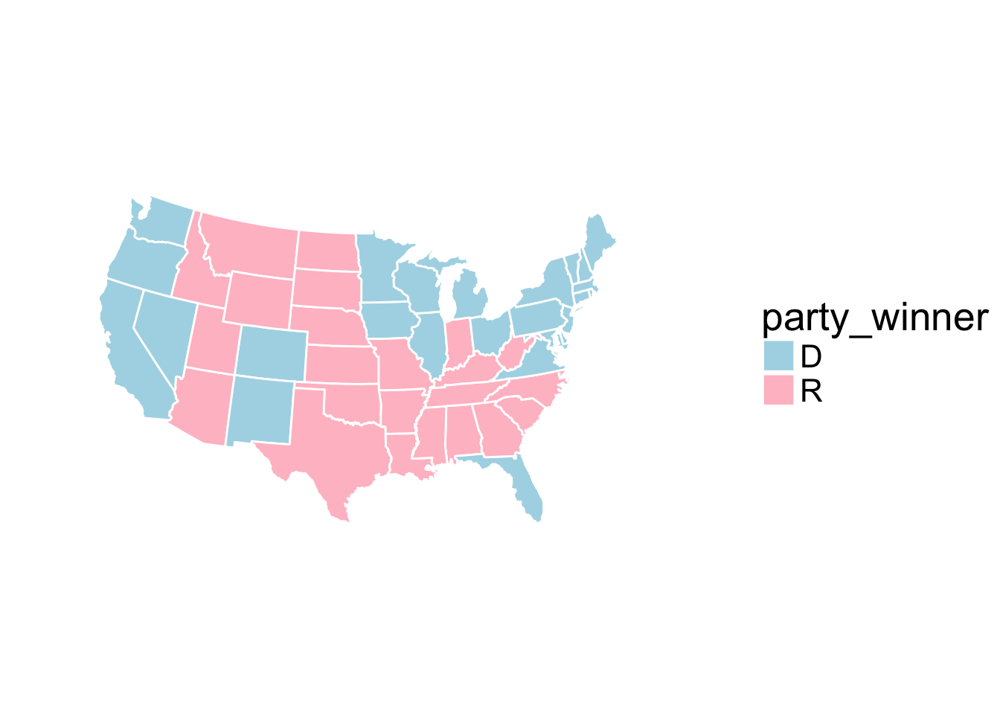

Chapter 12 Shiny App
12.1 Lecture
12.2 Lab: Representation of the results of election in USA since 1789
- Import the data data_us_presidential_elections.txt and data_electoral_votes.txt. Create a data set data_result that merge both data.
The map of the US can be obtained as follows:
## LOAD PACKAGES ####
library(ggplot2) # Need for 48 states map
library(mapproj) ## Loading required package: maps# Get map - continental 48 states version
states = map_data("state")
head(states)## long lat group order region subregion
## 1 -87.46201 30.38968 1 1 alabama <NA>
## 2 -87.48493 30.37249 1 2 alabama <NA>
## 3 -87.52503 30.37249 1 3 alabama <NA>
## 4 -87.53076 30.33239 1 4 alabama <NA>
## 5 -87.57087 30.32665 1 5 alabama <NA>
## 6 -87.58806 30.32665 1 6 alabama <NA>summary(states)## long lat group order
## Min. :-124.68 Min. :25.13 Min. : 1.00 Min. : 1
## 1st Qu.: -96.22 1st Qu.:33.91 1st Qu.:15.00 1st Qu.: 3899
## Median : -87.61 Median :38.18 Median :26.00 Median : 7794
## Mean : -89.67 Mean :38.18 Mean :30.15 Mean : 7798
## 3rd Qu.: -79.13 3rd Qu.:42.80 3rd Qu.:47.00 3rd Qu.:11699
## Max. : -67.01 Max. :49.38 Max. :63.00 Max. :15599
## region subregion
## Length:15537 Length:15537
## Class :character Class :character
## Mode :character Mode :character
##
##
## It contains for each state (region) its latitude, longitude. The variable group corresponds to the subregions. First, you should transform the variables region and subregion as factors and create a data data_plot by merging the states data to the data_us_presidential_elections.txt data.
First, we build a map for year 2012. To do so, you can use ggplot on the data_plot data by specifying in the argument aes
the longitude for x the latitude for y
and the group variable for group
and then by using the geom_polygon function. Color each state according to the winner of the election.

- Give for the year 2012 a table with the number of votes for each party:
## Group.1 x
## 1 D 332
## 2 R 206The R package tidyverse created by Hadley Wickam contains a set of packages such as dplyr that can be useful to manipulate data. However, they use the syntax with the pipe operator %>%. “Pipes are a powerful tool for clearly expressing a sequence of multiple operations”. You can have a look at this webpage for more information.
library(tidyverse) ## Loading tidyverse: tibble
## Loading tidyverse: tidyr
## Loading tidyverse: readr
## Loading tidyverse: purrr
## Loading tidyverse: dplyr## Conflicts with tidy packages ----------------------------------------------## filter(): dplyr, stats
## lag(): dplyr, stats
## map(): purrr, mapsexp(5)## [1] 148.4132log(exp(5))## [1] 55 %>% exp()## [1] 148.41325 %>% exp() %>% log()## [1] 5It works as follows:
library(tidyverse)
## MAKE TABLE SUMMARY OF ELECTION RESULT ####
data_sum = data_result %>%
# Focus on one specific year
filter(year == 2012) %>%
# Aggregate by each party in that election year
group_by(party_winner) %>%
# Compute total number of votes for each party
summarise(total_votes = sum(num_electoral_votes, na.rm = T))
# Details:
ff <- filter(data_result, year == 2012)
gg <-group_by(ff, party_winner)
summarise(gg, sum(num_electoral_votes)) ## # A tibble: 2 x 2
## party_winner `sum(num_electoral_votes)`
## <fctr> <int>
## 1 D 332
## 2 R 206- Write a sentence which gives the winner:
## [1] "The winner of the election was the D party with 332 electoral college votes."- Create the shiny interface where you can select the year (you can use selectInput in the sidebarPanel) and then it gives the previous map as well the table (question 4) with the number of votes and the sentence (question 5) which specifies the winner.